Live · in use by logistics teams
LOMO Track
Making tanker trips easier to understand on the move
A mobile experience that connects trip status, vehicle location, route exceptions and support requests for logistics teams.
What LOMO Track brings together
LOMO Track brings trip monitoring into a mobile workflow. The designs include an administrator’s trip list, an assigned-trip experience, trip details, location views, route exceptions and support tickets. The central design challenge was deciding what users need to understand immediately and what they can open when investigating a particular journey.
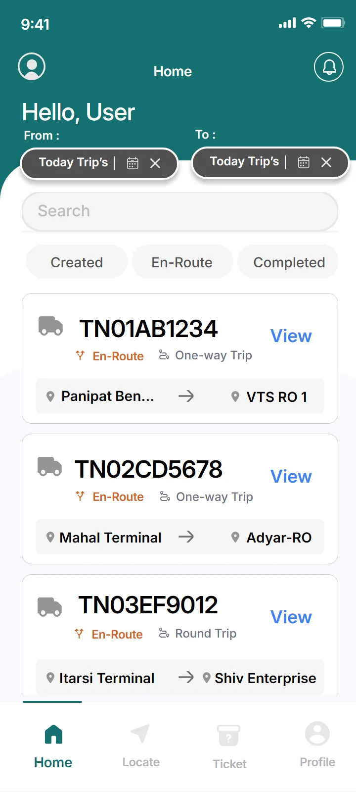
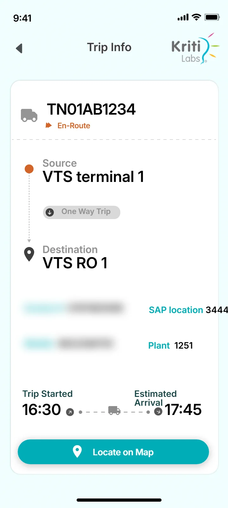
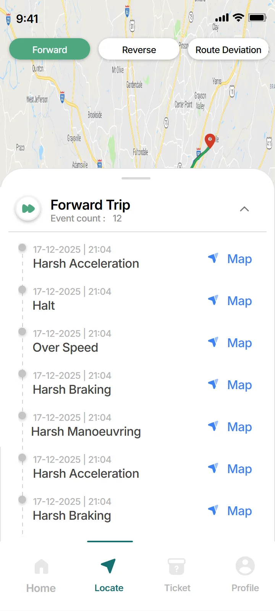
The challenge
A vehicle’s location is only one part of an operational decision. Users also need the trip’s source and destination, its current status and the events associated with it. On a small screen, these details compete for attention. The design addresses that complexity by separating the trip overview from deeper map and exception views while maintaining the vehicle and journey context.
Who it serves
The file distinguishes administrator and user authentication and shows both a multi-trip list and an assigned-trip home screen. The experience therefore supports two different starting points: finding a trip across a fleet and checking the trip relevant to an individual user. The case study focuses on these visible workflows rather than claiming a complete production permission model.
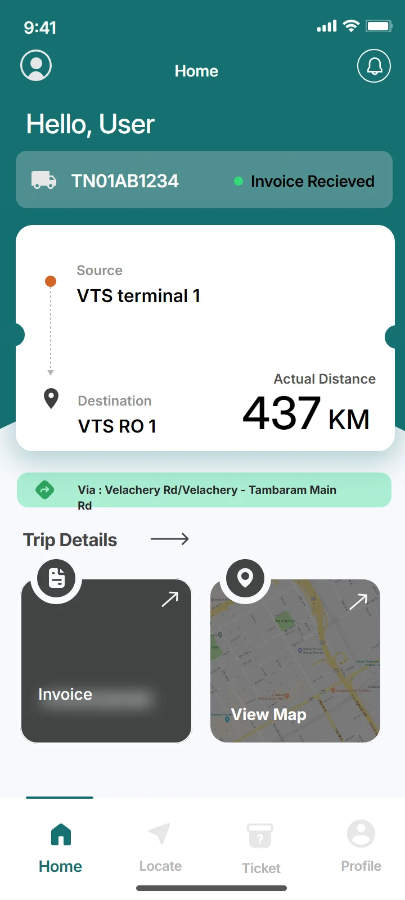
How the work moves
Administrator
- Sign in
- Search or filter trips
- Select a trip
- Review trip information
- Inspect the route
- Open an exception
- Return to the list
Assigned-trip user
- Sign in
- Review assigned trip
- Open location or navigation
- Raise a ticket when help is needed
- Review ticket status
Key decisions
1. Trip context comes first.
The trip summary groups vehicle identity, journey endpoints, status and distance before the user moves into detailed tracking. This gives the map a purpose: inspecting a journey the user already understands.
2. Route views distinguish different parts of the journey.
Forward, reverse and deviation labels give users a way to inspect route information in smaller groups. Event lists connect categories such as harsh braking, overspeed and halt with timestamps and a Map action, helping users move from a summary into a specific incident.
3. Support stays connected to the trip.
The ticket creation and created-ticket screens retain vehicle and route information alongside the issue type and status. The intended benefit is to reduce the amount of context a user must reconstruct when reporting a tracking issue.
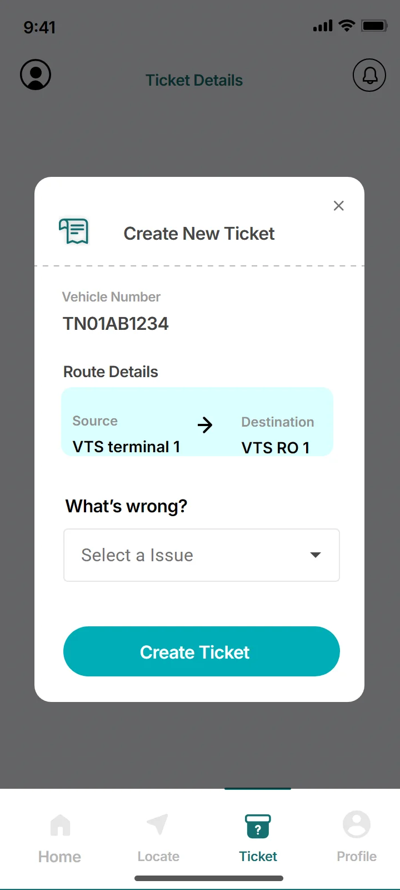
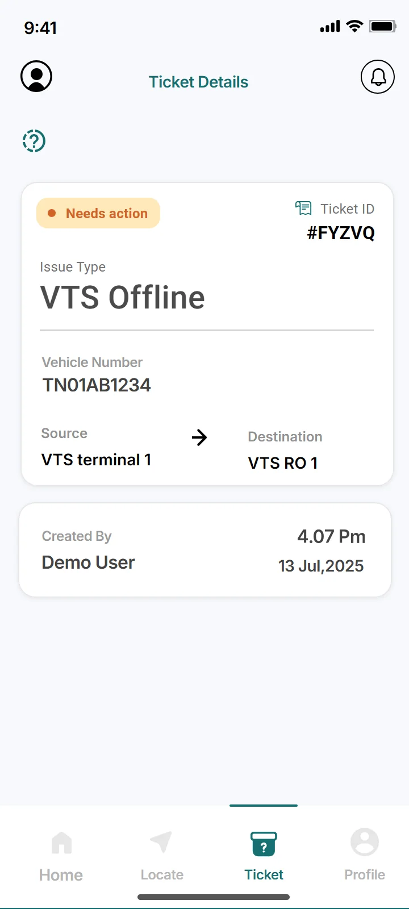
4. The design includes situations beyond an active trip.
No-trip, loading, restricted-access and application-update screens make system state explicit. A playback screen adds Pause and Reset controls for reviewing recorded movement.
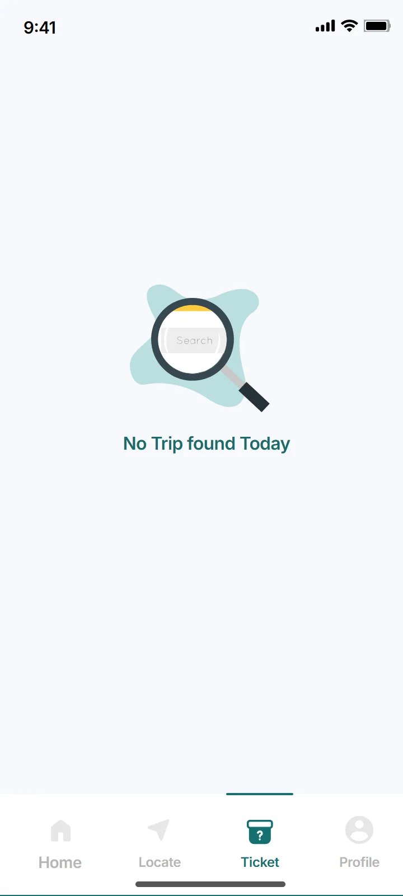
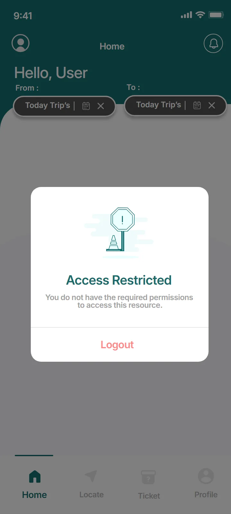
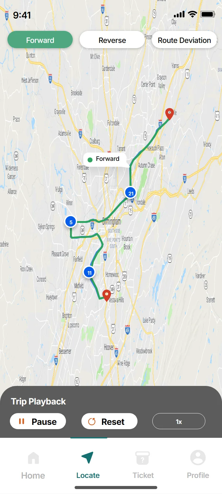
What the design achieves, and how to test it
The design provides distinct paths from trip overview to investigation and support. The next validation should test whether users can find a vehicle, explain an exception and raise a ticket without losing the original trip context. Useful measures are task completion, time to locate the relevant event and incorrect trip selections. These are proposed measures, not reported results.
This project shows how information hierarchy can turn a dense tracking interface into a sequence of operational questions.
A useful trip overview helps users decide what to inspect next, while the detailed views preserve the context needed to understand it.
Design decisions
Four decisions shaped the redesign of the earlier Tanker Lorry Locking System app. Each story follows the same structure: the situation before, the alternatives, the reasoning and trade-off, what I designed, and what can honestly be said about the result.
1Trip context before the map
Every trip opens on vehicle, status and route; the map is one tap away.
Strategic · Read story
2Splitting the route into forward, reverse and deviation
Events are grouped by part of the journey, each with a time and a Map link.
Strategic · Read story
3Tickets that carry the trip with them
Vehicle and route are filled in; the user only says what's wrong.
Tactical · Read story
4One app for transporters and drivers
One structure for both roles, with a different home for each.
Strategic · Read story
- Original appThe earlier Tanker Lorry Locking System
- ExplorationWireframes and earlier frames from my Figma file
- ConceptualAn option described for comparison, not a design I made
- Final designThe redesigned screens
Decision 01 · Strategic
Why I put trip context before the map
A dot on a map doesn't say which trip it is, where it's going, or whether anything is wrong.
Before the decision
In the earlier Tanker Lorry Locking System, trip cards showed the invoice and vehicle numbers in small type next to a large "Map" button. Opening a trip went straight to a map with a single pin, followed by lock steps.
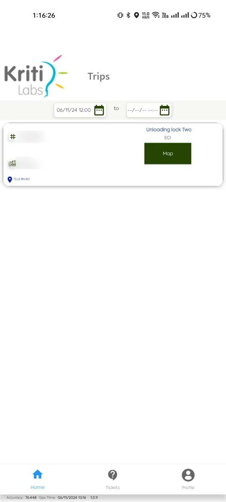
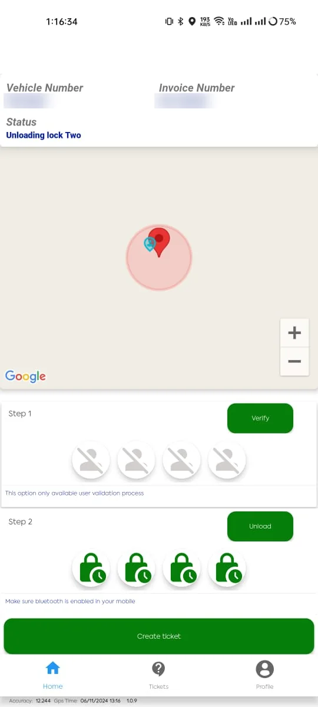
The turning point
Reasoning
A location only means something once you know which journey it belongs to. Showing the trip first gives the map a job: inspecting a journey the user already understands.
Trade-off
An extra step before the map. "View" on each card and a full-width "Locate on Map" button keep that step short.
What I designed
- Trip listVehicle, status, trip type, endpoints; search and status filters
- Trip infoRoute, invoice, plant, start and ETA, then Locate on Map
- Driver homeThe assigned trip, route and actual distance
Result
Every trip is identified by vehicle, status and route before any tracking. Time to find a vehicle and incorrect trip selections would show whether this works.
- Information hierarchy
- Recognition rather than recall
- Progressive disclosure
Decision 02 · Strategic
Why I split the route into forward, reverse and deviation
A tanker trip isn't one line on a map. It goes out, comes back, and sometimes leaves the planned route.
Before the decision
The earlier app's trip map showed one location pin. It had no route line and no driving events, so there was nothing to investigate.
The turning point
Reasoning
Grouping events by leg lets someone answer "what happened on the way back?" without filtering a crowded map.
Trade-off
Segments hide the whole journey. A summary sheet lists all three with event counts (12 forward, 13 reverse, 9 deviation) so nothing is out of sight.
What I designed
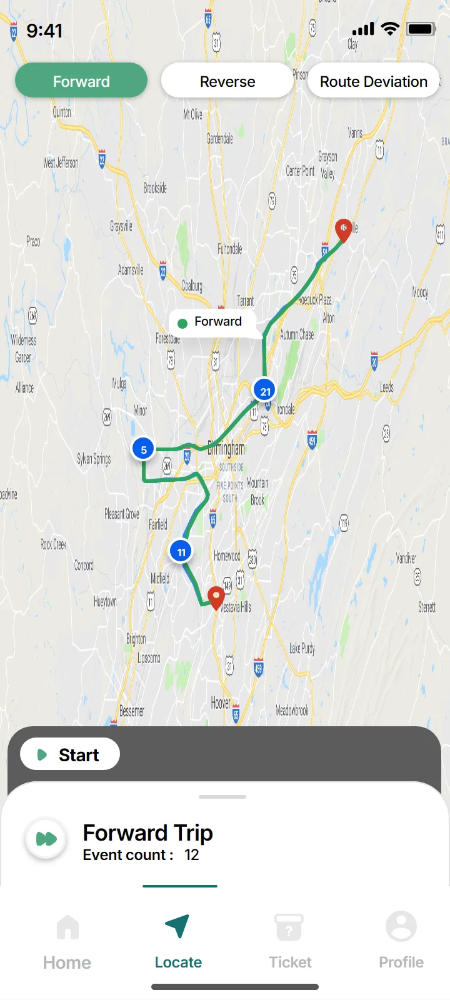
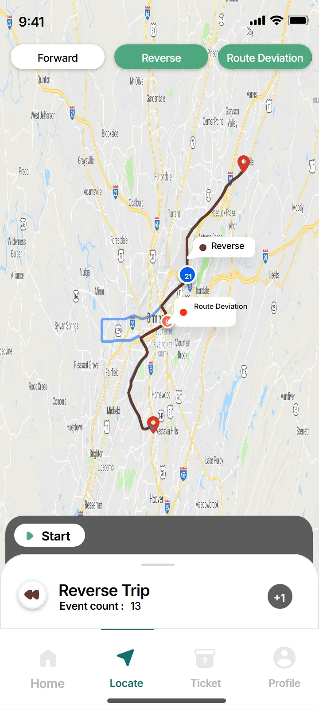
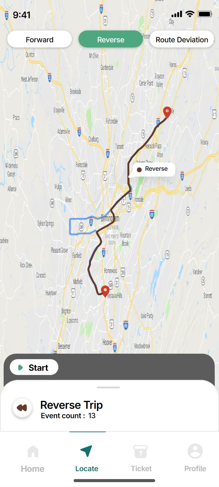
- ForwardThe outbound leg and its events
- ReverseThe return leg
- Route deviationWhere it left the plan
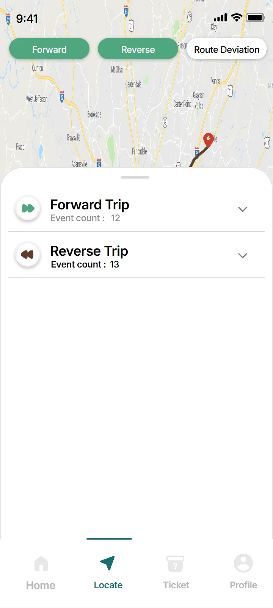
- SummaryAll three segments with counts
- EventsType, time and a Map link to the spot
My file holds more than a dozen Locate frames that explore route colours, pins and sheet states before this structure settled.
Result
Every driving event belongs to a leg of the journey and links to its place on the map. Time to locate the relevant event would show whether this helps.
- Chunking
- Progressive disclosure
- Visibility of system status
Decision 03 · Tactical
Why support tickets carry the trip with them
When tracking fails mid-trip, the person reporting it shouldn't have to retype the vehicle and route.
Before the decision
The earlier app ended the trip screen with a full-width "Create ticket" button and had a Tickets tab. The available screenshots don't show what the ticket form itself asked for.
The turning point
Reasoning
The app already knows the trip. Asking for it again adds effort and mistakes at the worst moment.
Trade-off
A fixed list of issue types is quick but can't cover everything, so unusual problems need a fallback.
What I designed
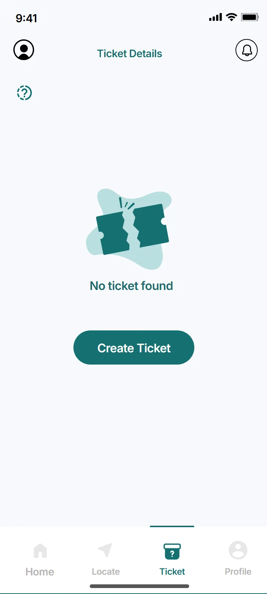
- EmptyNo tickets yet, one clear action
- CreateTrip details filled in, one question
- CreatedStatus, ticket ID, issue and trip
Result
Tickets keep the vehicle and route alongside the issue type and status. The intended benefit, less context to reconstruct, hasn't been measured.
- Error prevention
- Recognition rather than recall
- Visibility of system status
Decision 04 · Strategic
Why one app serves transporters and drivers
A transporter watching a fleet and a driver on one trip open the same app for very different reasons.
Before the decision
The earlier app's screens show one trip list as the home screen, with Home, Tickets and Profile tabs.
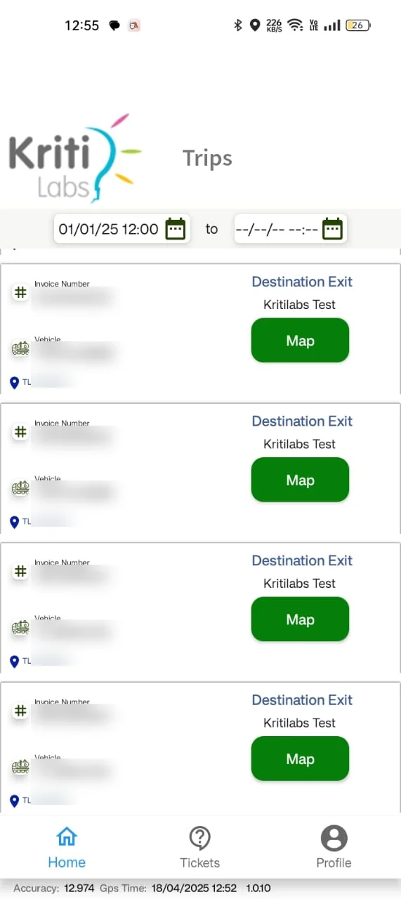
The turning point
Reasoning
Both roles care about the same objects: trips, locations and tickets. One structure keeps them speaking the same language; only the starting point changes.
Trade-off
Shared navigation means some areas matter less to drivers, and permission limits need their own screens (Unauthorized, Access Restricted).
What I designed
The file has an information architecture for each role. They contain the same structure: onboarding, authentication, and Dashboard, Locate, Tickets and Account under one navigation.
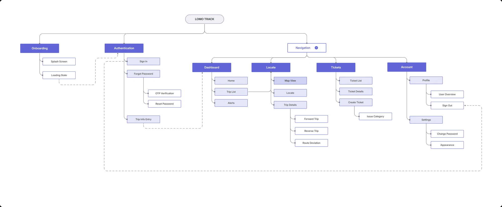
Result
Both roles share one navigation and vocabulary, and each starts where their work starts. Whether drivers find their trip without help is the next thing to test.
- Consistency and standards
- Flexibility and efficiency of use
- Error prevention
From the original app to the final design
The same screens at three points: the earlier app, the lo-fi wireframes in my file, and the final design.
- Original
Trip listSmall identifiers, a large Map button.
- Lo-fi
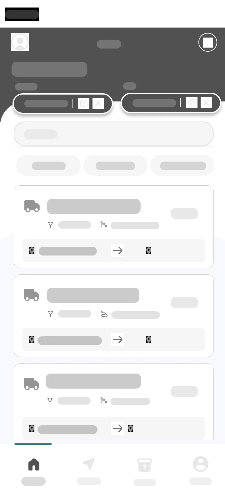
Trip listSearch, filters and structured trip cards.
- Final
Trip listVehicle, status, trip type and endpoints.
- Original
TripA single pin and lock steps.
- Lo-fi
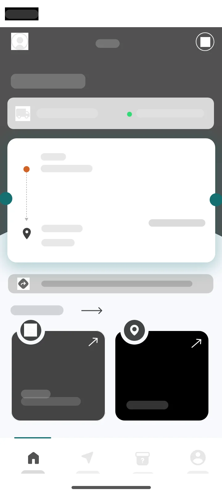
Assigned tripRoute card first, details below.
- Final
Assigned tripRoute, distance and trip details.
- Original
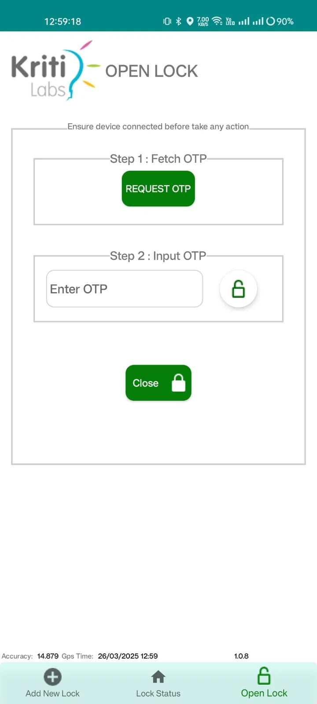
Lock OTPTwo boxed steps on a blank screen.
- Lo-fi
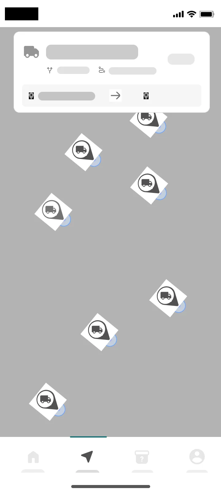
LocateVehicle markers under a trip card.
- Final
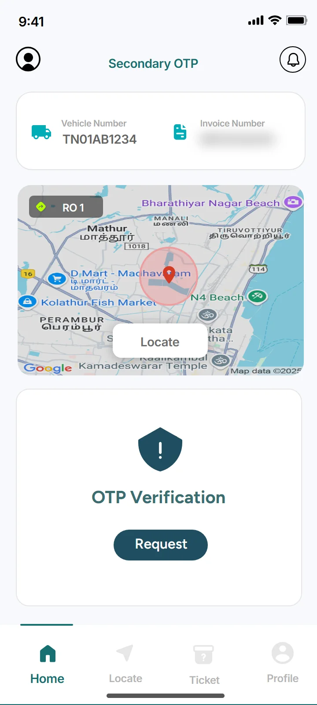
Secondary OTPTrip, location and request in one place.
Designing consistency across the fleet workflow
These values come from the final frames in the Figma file.
Typography · Inter
- TN01AB1234Inter Semi Bold 24 · vehicle and key values
- Forward TripInter Semi Bold 16–18 · titles
- Harsh AccelerationInter Semi Bold / Medium 14 · list items
- 17-12-2025 | 21:04Inter Medium 12 · metadata
Colour and meaning
- #147070Brand teal · headers, chips
- #00ADB7Primary buttons
- #3B82F6Links · View, Map
- #D26326En-Route status
- #4EA780Forward route
- #D23A26Deviation · alerts
- #6B7280Secondary text
- #F8F9FDScreen background
States beyond the active trip
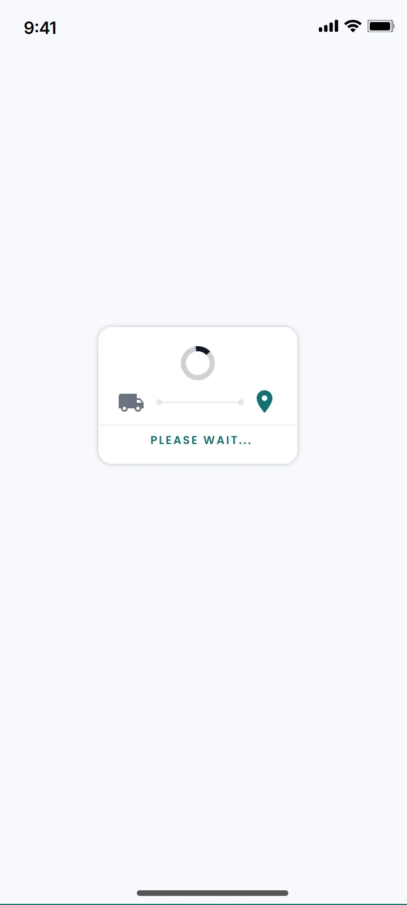
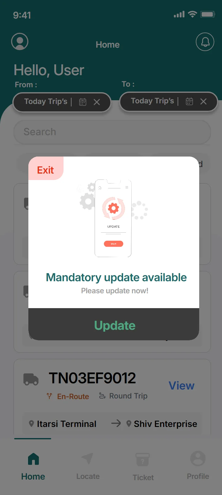
- LoadingA truck-to-pin progress card
- Mandatory updateUpdate or exit
- No permissionExplained, with Logout
Contrast check
I checked the main colours against WCAG 2.2 text contrast. Several fall short and are on the refinement list.
| Pair | Ratio | AA text |
|---|---|---|
| White on brand teal #147070 | 5.9:1 | Pass |
| Secondary text #6B7280 on white | 4.8:1 | Pass |
| Deviation #D23A26 on white | 4.8:1 | Pass |
| En-Route #D26326 on white | 3.8:1 | Fail |
| Links #3B82F6 on white | 3.7:1 | Fail |
| White on primary button #00ADB7 | 2.7:1 | Fail |
| Forward route #4EA780 on white | 2.9:1 | Fail (as text) |